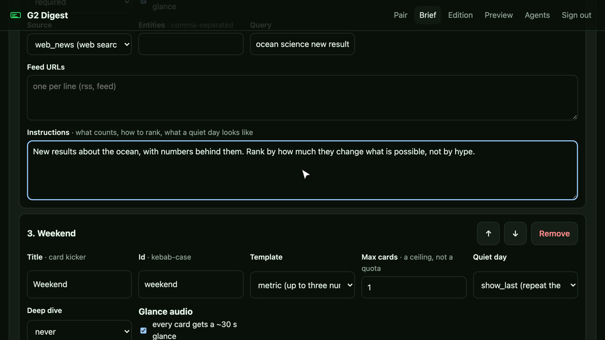
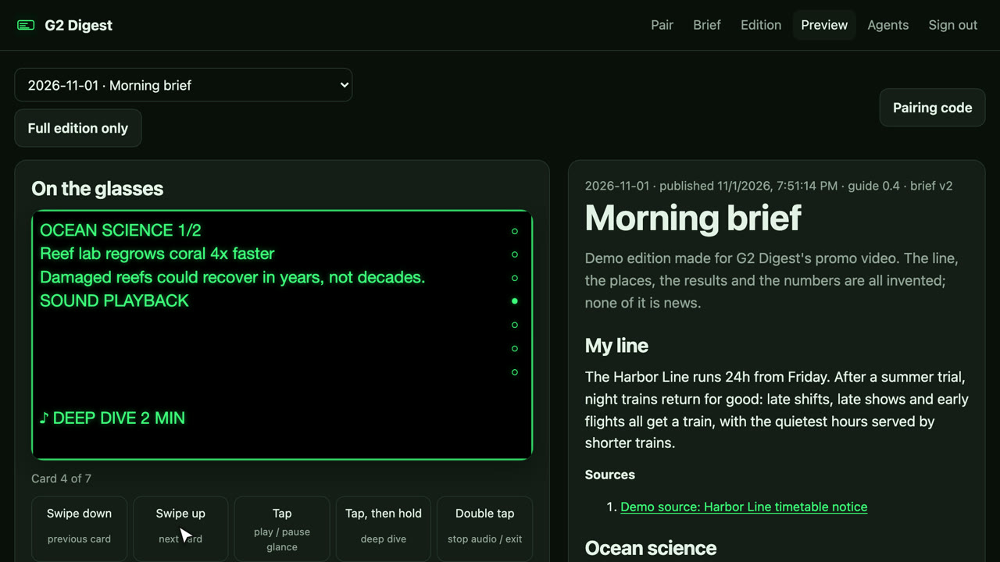
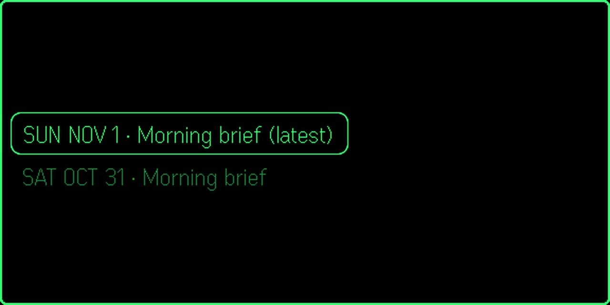
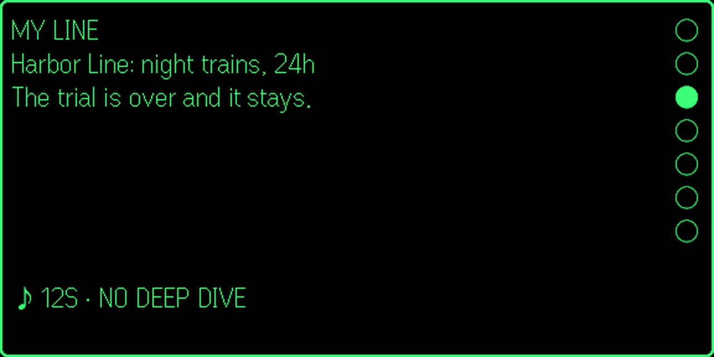
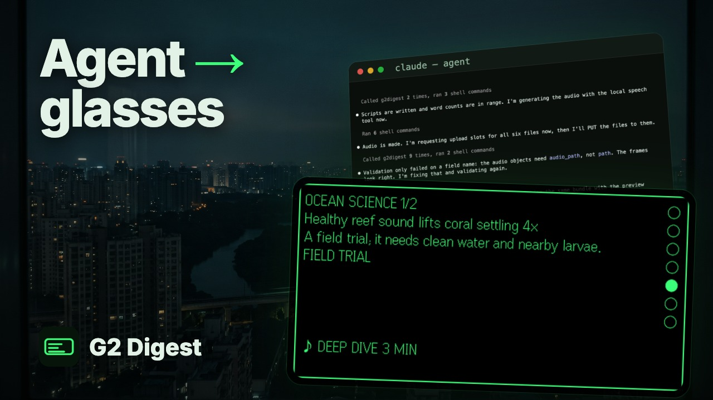
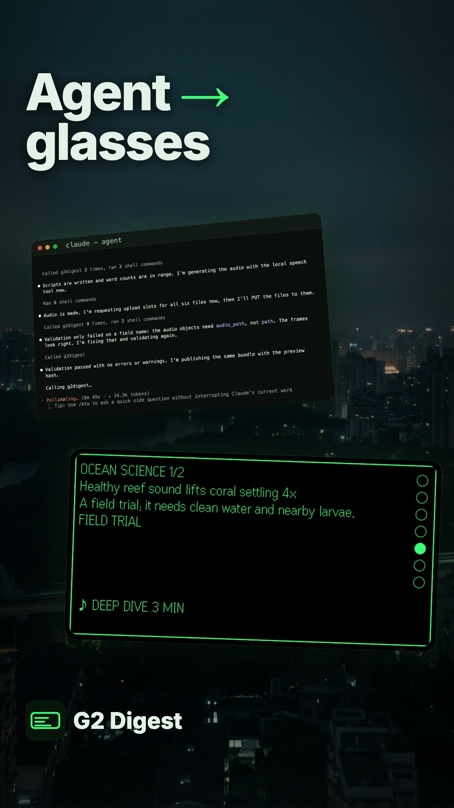

From your brief, through your agent, to your glasses: the first cut is ready
G2 Digest's walkthrough video is rendered: 2:22 in 16:9 with seven YouTube chapters, plus a 26-second 9:16 short. It follows an edition's whole path on real screens: you write the brief, connect your own agent over OAuth, watch a real Claude Code run research, write, make audio, get refused by the validator three times and publish, then pair the glasses and read on the ride with the R1 ring (and the podcast feed for headphones). Your eight Flow pieces and the music are all in it. Watch both cuts with sound, then upload with §YouTube.
Chapters + scriptAs planned; D1–D4 = recommendations
Recordings10 clips, local stack, demo brief
Agent runReal: 8 min 59 s, 4 validations, published
Flow art8 of 8 in, all used
Voiceoveram_echo, 32 lines
Music"First Light Walkthrough", 107.7 BPM
Edit2 cuts rendered: your review
YouTubeKit ready (§YouTube): you upload
Next for you: watch the two cuts with sound, on a phone too (I can't listen: the mix, the voice and the music need your ears). Then write notes and click Copy summary, or upload with §YouTube and send me the walkthrough's link for G2 Digest's docs page. Media for this video lives in
/Volumes/DATA/GitHub/hejitech-apps/branding/promo-videos/public/g2digest-demo/.What's real
- Every product frame is the app on the local stack: the brief editor, Build agents, the OAuth consent page Claude Code itself opened, the agent's terminal, the edition and its G2 preview, Pair, and the plugin in the Even Hub simulator (phone page and glasses).
- The agent is Claude Code (Sonnet) running
pipeline/build-prompt.mdagainst the local MCP server. Its research, scripts, audio, the validator's refusals and the publish are one unedited run, time-lapsed with the real speed and clock on screen. It cut the platform-repaint notice and the "ocean will power everything" press release on its own, as the brief asks. - The glance and deep dive you hear under chapter 5 are the agent's own audio.
Different from the plan
- 2:22, not 2:00. The narration alone is 1:52; the full path didn't fit in two minutes without dropping a step. Say if you'd rather lose a step (e.g. the podcast feed).
- The code isn't typed on camera. macOS won't let this shell send keystrokes to the simulator, so chapter 4 shows the code form, then the paired glasses, with a label "type the code from Pair".
- One line reworded for the voice: "Double tap to stop, and again to go back" (the first double tap stops the audio).
| If you want to redo | What to do |
|---|---|
| A line of the script | Change it in your notes: I regenerate that line, re-time captions and subtitles, re-render. |
| The narration voice | Name another Kokoro voice: one command regenerates all 32 lines. |
| A Flow piece or the music | Drop the new file in the folder above and say which: the edit swaps one file name. |
| The length | Name the step to drop; the chapters re-flow. |
The edit: two cuts to review
g2digest-demo.mp4
g2digest-demo-short.mp4
| Chapters | 0:00 Intro 0:13 1 · Write your brief 0:33 2 · Connect your agent 0:55 3 · Your agent builds the edition 1:26 4 · Pair your glasses 1:47 5 · Read on the ride 2:11 Recap |
|---|---|
| Pace | Each step plays its recording from one action to the next at whatever speed fits its line (mostly 0.8–2×; a "⏩ 2.0×" badge when typing is sped up). The agent run is time-lapsed up to ~60× through research and audio, 4× through the validator, 1× at the publish; the badge shows the speed and the run's real clock. |
| Camera | Zooms and pans onto each action from the recorder's event logs (springing in just before the narration names it), spotlight on the target, the UI's own words as a label, cursor ripple on clicks; the R1 ring and its gesture beside the glasses. |
| Transitions | Blur-fade between steps, the window springing flat out of a slight tilt at each new screen, the chapter bar's dot travelling to the next stop. Bridges: your A1 (opener), promo shot 6 (night before), A2 (night to sunrise), promo shot 7 (out of the tunnel). |
| Sound | Kokoro am_echo narration; the music's own soft intro under the opener, spliced on a bar line into its last minute so it ends on its own ending, ducked under the voice; the agent's reef glance and deep dive under chapter 5. |
| On screen | "Demo data" on every recording; "Even Hub simulator" on the phone and glasses; the podcast feed link covered ("private link · hidden"); end card: name, tagline, URL, "works with any MCP agent", and the disclaimer (demo data, AI backdrops, synthetic narration, Claude Code as one example). |
| Checked | Stills at every step before rendering, frames from both renders, loudness (two-pass, −14 LUFS, true peak −1.3 dB), subtitles (in order, no overlaps), YouTube's chapter rules (first at 0:00, seven, each ≥ 10 s). Not checked: how it sounds. |
Decisions: the recommendations, since none were changed
| # | Question | Went with |
|---|---|---|
| D1 | Agent on screen | Claude Code, named (Sonnet, to spare your weekly usage). The end card says it's one example of an MCP agent. |
| D2 | What the demo brief follows | Made-up feeds served locally (branding/promo-videos/scripts/g2digest-demo-sources/): the Harbor Line, a reef trial, a seawater battery, a forecast, plus a repaint notice and a hype press release for the agent to cut. |
| D3 | Narration voice | am_echo, the promo's voice. |
| D4 | Promo shots as bridges | Yes: shot 6 before chapter 3, shot 7 before chapter 5. |
Chapters and script: the edition's whole path, in five stops
This is the plan as agreed; the final timings are in §The edit (the cut runs 2:22).
Who it's for: someone who just found G2 Digest (on Even Hub, or from the promo) and owns Even G2 glasses and an R1 ring. They should finish knowing how to set it up end to end and how to read on the ride. Length: 2:00 at ~140 words a minute, one action at a time.
Voiceover, the whole walkthrough
Voiceover, 2-minute walkthrough
Your brief, ready before the train. Here's the whole path, from your words to your glasses. You write the brief. Your own agent builds the edition. G2 Digest checks it, and delivers it. Start in the web app. Open Your brief, and give your edition a name. Set Ready by to the time you leave home. Add a section for each thing you follow, with a source and plain instructions: what counts, and what to skip. Then Save brief. Your agent reads it. It never edits it. Next, Build agents. Any agent that speaks MCP and can make audio will do. Point it at the server, and it asks to connect. You see exactly what it may do. Click Allow. Copy the one prompt it runs, and schedule it an hour before your train. Here's a real run. The agent fetches the card guide and your brief. It reads every source, then writes the full edition and the cards. It records the audio itself, and uploads it. Then the validator checks every card. Nothing publishes until there are no errors. Published. Open the edition: every card with its sources, and a preview of the glasses. On Pair, get a six-digit code. Open G2 Digest in the Even app, and type it in. You pair once. The glasses leave the tour, and show your editions. No glasses today? Make a feed link for your podcast app. On the train, pick today's edition. It opens at the first card. Swipe up on the ring for the next card. The dots show where you are. Tap to hear the glance. Tap, then hold, for the deep dive. Double tap to go back. It's already on your phone, so it plays offline. Write it once. Your agent builds it. You just read. G2 Digest. Your brief, ready before the train.
One take per chapter, so a re-recorded chapter only re-voices itself. Each line ends before its step's hold does; if it runs long, the hold grows, not the speech rate.
Chapter by chapter: the step tables (the contract between script, recording and edit)
Each row is one action: the recorder performs it and logs where it happened, the edit zooms there, and the voiceover names it. Labels in the voiceover are the UI's exact words.
0:13–0:31 1 · Write your brief
0:31–0:49 2 · Connect your agent
0:49–1:13 3 · Your agent builds the edition
1:13–1:30 4 · Pair your glasses
1:30–1:51 5 · Read on the ride
1:51–2:00 Recap and end card
The short (9:16, about 40 s): from your agent to your glasses
The single most striking stretch of the path: a real agent run publishes, and a minute later (time-lapsed) it's on the glasses. Phone-height terminal and glasses, larger callouts, no chapter bar, its own end card.
Voiceover, short
Your agent builds tomorrow's brief tonight. It reads your sources, writes the cards, records the audio, and passes the validator. Then it publishes. In the morning, it's on your glasses. Swipe the ring to skim. Tap, then hold, for the deep dive. G2 Digest. Your brief, ready before the train.
Look and feel: night to morning, in G2 Digest's green
Same world as the promo: G2 Digest's HUD green on deep green, a metro city. The video moves through one night: the brief and the agent happen in the evening (lamp light, blue night outside), the build runs overnight, pairing happens at dawn, the ride is in the morning, and the end card is golden daylight. The real screens are always the brightest thing in the frame.
#07140b deep green
#030805 night
#3dff7a G2 green
#e3f2e6 mint (titles)
#f2c46b daylight
| Device frames | Web app: a slim dark browser window (no real browser chrome, just three dots and the page's path, e.g. /brief/), soft shadow. Terminal: the same window in black with a monospace title "agent". Phone page: a plain dark phone outline. Glasses: the HUD frame as the simulator draws it, green on black, floating like the promo's. Each sits over its chapter's backdrop, slightly tilted, and settles flat before the first step. |
|---|---|
| Camera | Zoom 1.4–2.2× onto each step's target from the recorder's event log, springing in about half a second before the voiceover names it, held while it's read, back out between steps. Slow parallax: backdrop drifts, device holds still during a step. |
| Transitions (one family) | Along the line. Chapter changes: the chapter bar's green dot travels to the next stop while the frame blur-slides left. Into a recording: a cross-zoom into the device. Out of the edition into the glasses: the G2 preview card scales up and becomes the real glasses card (match cut). The end card: a dreamy zoom into daylight. No other wipes. |
| Spotlight, labels, touches | Everything but the target dims to ~60 % black with a soft edge. Labels: mint text on a deep-green pill with a thin green line to the target, the UI's own words, ≤ 5 words. A green ring follows the cursor on desktop; a ripple marks phone taps; ring gestures appear as a small ring icon with an arrow (swipe up, tap, hold, double tap) beside the glasses. |
| Titles and type | Inter (as every promo): chapter cards "2 · Connect your agent" in mint, the goal in a lighter line under it. Captions bottom-centre over the caption band, clear of the chapter bar (top). |
| Speed | 1× for every action. Only the agent's research and audio rendering are time-lapsed, with a "16×" style badge showing the real speed and a small clock showing real elapsed minutes. |
| Never on screen | A generated picture of the app, the glasses' display or a terminal; real headlines, companies or people in the edition; tokens (the token in the agents config is the placeholder g2a_…; the seed's local token is never shown); the reader's email beyond the seed address; real station names or logos in the art. |
The real screens today (from the promo's recordings, same demo edition):




Flow art: eight pieces, no screens, mostly no people
Download every take into /Volumes/DATA/GitHub/hejitech-apps/branding/promo-videos/public/g2digest-demo/ and keep Flow's file name (I add the piece's id in front if it's missing: art-B1_…png, A1_…mp4). Several takes of one piece are fine: I pick and say which.
Flow settings (check before generating)
| Stills (A3, B1–B5) | Flow → Images, 16:9, 2–4 per prompt, keep the best. They are backdrops: the centre stays calm and slightly dark, because a device frame covers it. |
|---|---|
| Loops (each B) | Then Video · Frames with the kept still as the first frame and the loop prompt under it, 16:9, 8 s; draft on the fast model at 720p, the keeper at the highest quality offered (1080p). |
| Videos (A1, A2) | Video · Text to video (no characters needed), 16:9, 8 s, same draft-then-final rule. |
| Every prompt | Already says: no people's faces, no logos, no text, no readable screens. Mute Flow's sound: the edit adds music and narration. |
A1 Opener video · 0:00–0:04
A1 prompt
Video. Pre-dawn in a quiet modern apartment, a wide window over a sleeping city with a metro viaduct in the distance. On the windowsill in the foreground rest a pair of slim matte black everyday glasses and a thin matte black ring. The sky slowly shifts from deep blue-green night to the first warm amber light at the horizon; a distant train glides across the viaduct with its windows glowing. A soft green glint catches the glasses' lens for a moment. Slow push-in toward the glasses, 50mm, shallow depth of field, calm cinematic grade in deep green and amber. No people, no logos, no text, nothing readable on the lenses. 8 seconds.
B1 Backdrop · Write your brief (evening)
B1 still prompt
A calm evening desk by a window, seen softly out of focus: a warm desk lamp, a mug of tea, a paper notebook with a pen, deep green wall, blue night with blurred city lights outside. Wide 16:9 composition with a large calm, dark, uncluttered area in the centre. Cinematic, shallow depth of field, palette of deep green, warm lamp amber and night blue. No people, no screens, no logos, no text.
B1 loop prompt (Frames, from the kept still)
Video. Keep the image exactly as it is. The lamp light flickers very gently, steam rises slowly from the mug, a few city lights twinkle outside. Very slow push-in. No people, no text. 8 seconds.
B2 Backdrop · Connect your agent
B2 still prompt
An abstract dark space in deep green-black, with fine glowing green threads of light that start at the left and right edges and reach toward each other, meeting softly in the centre like two hands connecting; tiny points of light drift along the threads. Wide 16:9, elegant and calm, lots of dark negative space in the middle, subtle film grain. No people, no symbols, no logos, no text.
B2 loop prompt (Frames, from the kept still)
Video. Keep the image exactly as it is. Small points of green light travel slowly along the threads toward the centre and the threads pulse gently once. Very slow push-in. No text. 8 seconds.
B3 Backdrop · Your agent builds the edition (overnight)
B3 still prompt
A city skyline at 3am seen from a high window, deep blue-green night, most windows dark, a metro viaduct crossing the middle distance, faint green light trails flowing slowly along it like data. Wide 16:9, cinematic, calm, dark centre with space for a frame, soft bokeh. No people, no signs, no logos, no text.
B3 loop prompt (Frames, from the kept still)
Video. Keep the image exactly as it is. The green light trails flow steadily along the viaduct, a few windows switch off, clouds drift. Very slow push-in. No text. 8 seconds.
A2 Bridge video · night turns to morning (before chapter 4)
A2 prompt
Video. Time-lapse from a high window over a city: deep blue-green night with a metro viaduct, light trails along it, then the sky brightens quickly through teal to warm amber sunrise, the city's windows light up, the first morning train crosses the viaduct in golden light. Locked-off wide shot, 24mm, cinematic grade. No people, no signs, no logos, no text. 8 seconds.
B4 Backdrop · Pair your glasses (dawn)
B4 still prompt
Morning light on a light oak table by a window: a pair of slim matte black everyday glasses and a thin matte black ring placed to the right, a phone lying face down to the left, a coffee cup, soft long shadows, warm amber sunlight with a cool green tint in the shadows. Wide 16:9, shallow depth of field, a clear calm area in the centre. No people, no visible screens, no logos, no text.
B4 loop prompt (Frames, from the kept still)
Video. Keep the image exactly as it is. Sunlight slowly moves across the table, the coffee steams, a faint green glint passes over the glasses' lens. Very slow push-in. No text. 8 seconds.
B5 Backdrop · Read on the ride
B5 still prompt
Inside an empty modern metro carriage in a dark tunnel, softly out of focus: cool green-tinted light, chrome poles, tunnel lights streaking past the dark windows as bokeh. Wide 16:9, cinematic, darker in the centre to leave room for a floating frame. No people, no signs, no maps, no logos, no text.
B5 loop prompt (Frames, from the kept still)
Video. Keep the image exactly as it is. Tunnel lights streak past the windows steadily, the carriage sways very slightly. Very slow push-in. No people, no text. 8 seconds.
A3 End card art (daylight)
A3 still prompt
A sunlit elevated metro platform in the morning, golden light, a train waiting with its doors open, soft haze, seen from a low angle, very calm. Wide 16:9 with the left two thirds of the frame clear and softly blurred for a title. Cinematic, warm amber with deep green shadows. No people, no signs, no station names, no logos, no text.
Bridges from the promo (D4): Shot_6_draft_54e21e40_1080p.mp4 (night before) and Shot_7_draft_b0a34f35_1080p.mp4 (out of the tunnel), about 1.5 s each, copied from public/g2digest-launch/; nothing to make.
Recordings: what was recorded, and how
All from the local stack with the seed reader, never production; the seed was restored afterwards (its own brief, devices and no editions). Recorder: branding/promo-videos/scripts/g2digest-demo-record.mjs (stage · brief · agents · agent · term · edition · pair · glasses · restore). Each clip has an event log (rec-*.events.json) that aims the edit's camera, spotlight and labels.
The agent run
| Run time | What happened |
|---|---|
| 0:00 | /mcp → Authenticate; Claude Code opens the consent page; Allow; "Authentication successful. Connected to g2digest." |
| 0:27 | The prompt from Build agents pasted; get_card_authoring_guide, get_user_brief |
| 0:40–1:30 | Reads the three feeds and the item pages; writes the edition, cards and audio scripts; cuts the repaint notice (not a service change) and the press release (no data) |
| 1:30–6:20 | Makes six audio files with ./speak (Kokoro); splits the deep dives by paragraph when a word wasn't in the voice's dictionary; create_audio_upload ×6, PUTs each file |
| 7:28–8:30 | validate_cards ✗ E_SHAPE · ✗ server error · ✗ E_AUDIO_SHAPE · ✓ (no errors, no warnings) |
| 8:50 | publish_cards ✓ (7 cards, 7 min of audio); run log |
Found a G2 Digest bug on the way: the second validation crashed the Worker ("
methodology?.trim is not a function") instead of returning an error, because the agent sent a section's methodology as something other than a string. projects/g2digest/packages/core/src/validate.ts:182 calls .trim() without checking the type (the shape check at line 271 runs too late for it). An agent gets a bare server error instead of a rule it can fix. Not fixed here; say if you want it fixed.Voiceover and music
Voiceover: Kokoro am_echo at 1.06×, one clip per line (32: 26 for the walkthrough, 6 for the short), read back with faster-whisper for the caption timings (scripts/g2digest-demo-vo.py, scripts/g2digest-demo-words.py). Spelled the way it's said: "G two Digest", "M C P"; the captions show "G2", "MCP".
Music: your "First Light Walkthrough" (2:52). Measured with librosa: 107.7 BPM, very steady (beat spacing varies 8 ms); a soft intro to ~20 s, a quieter break at 1:38–1:50, a fade from ~2:34. The walkthrough plays the intro under the opener, then splices on a bar line at 0:40 into the part that runs to the track's own ending; the short uses the track's last 26 s. Both ducked to ~0.24 under the narration, 0.5 between lines.
YouTube upload: what to fill in, for each cut
Two uploads, in the order Studio asks. The walkthrough is the one G2 Digest's docs page will embed, so upload it first.
| Cut | Visibility |
|---|---|
| Walkthrough · 16:9 · 2:22 | Public (or Unlisted until the docs page is updated) |
| Short · 9:16 · 0:26 | Public: vertical and under 3 minutes, so YouTube makes it a Short |
1 · The walkthrough
Title
How G2 Digest works: from your AI agent to your Even G2 glasses
Description
The whole path of a G2 Digest edition, on real screens: you write the brief, your own AI agent builds the edition overnight, G2 Digest checks every card, and it's waiting on your Even G2 glasses before the train. What you'll see: • Write your brief: the sections you follow, their sources, plain instructions, when it must be ready. • Connect your agent: any agent that speaks MCP and can make audio; you approve exactly what it may do. • A real agent run: it reads the sources, writes the cards, records the audio, and fixes what the validator rejects before it can publish. • Pair your glasses once with a six-digit code, or add a private podcast feed. • Read on the ride: swipe the R1 ring to skim, tap for the glance, tap and hold for the deep dive. It plays offline. 0:00 Intro 0:13 1 · Write your brief 0:33 2 · Connect your agent 0:55 3 · Your agent builds the edition 1:26 4 · Pair your glasses 1:47 5 · Read on the ride 2:11 Recap Open G2 Digest: https://g2digest.hejitech.workers.dev How it works: https://tianhaoz95.github.io/hejitech-apps/g2digest/ G2 Digest is not affiliated with Even Realities or Anthropic. Claude Code is shown as one example of an MCP agent. The briefs, sources and editions in this video are demo data: the line, places, results and numbers are invented. Screens are recorded from a local test setup and the Even Hub simulator. Backdrops and scenes are AI-generated, and the narration is a synthetic voice. #SmartGlasses #EvenG2

g2digest-demo-thumbnail.jpg

| Video file | g2digest-demo.mp4 |
|---|---|
| Subtitles | g2digest-demo.srt (26 cues) |
| Chapters | In the description above (YouTube reads the timestamps: first at 0:00, seven, each ≥ 10 s). Leave automatic chapters off. g2digest-demo-chapters.txt |
| Playlist | The existing G2 Digest playlist. |
2 · The Short
Title
Your AI agent builds tomorrow's brief tonight #Shorts
Description
A real agent run, sped up: it reads your sources, writes the cards, records the audio and passes G2 Digest's checks. In the morning it's on your Even G2 glasses: swipe the ring to skim, tap and hold for the deep dive. https://g2digest.hejitech.workers.dev Not affiliated with Even Realities or Anthropic; Claude Code shown as one MCP agent. Demo data. AI-generated backdrops; synthetic voice. #SmartGlasses #EvenG2

g2digest-demo-short-thumbnail.jpg

| Video file | g2digest-demo-short.mp4 |
|---|---|
| Subtitles | g2digest-demo-short.srt (6 cues). If the dialog has no Video elements, add it later in Studio → Content → the Short → Subtitles. |
3 · The same for both
Tags (Show more)
G2 Digest, Even G2, Even Realities, smart glasses, R1 ring, AI agent, MCP, Claude Code, tutorial, how to, walkthrough, daily brief, morning brief, audio briefing, commute, offline
| Thumbnail | Upload file → the walkthrough's JPG (custom thumbnails need a phone-verified channel; otherwise Select from video). |
|---|---|
| Audience | Not made for kids. No age restriction. |
| Paid promotion | Unticked: your own product. |
| Altered content | Yes: the bridges include the promo's realistic AI-generated people (Sam, Bea) and the narration is a synthetic voice. |
| Language & captions | English; caption certification "never aired on television in the U.S." |
| License, embedding | Standard YouTube License; Allow embedding: on (required for the docs page). |
| Category, comments | Science & Technology; hold potentially inappropriate comments for review. |
| Subtitles | Video elements → Add subtitles → Upload file → With timing → the cut's SRT. The captions are burned in too, so CC shows them twice; the file still helps sound-off embeds, search and translation. |
| End screen, cards | Skip both: an end screen would cover the end card. |
| Then | Send me the walkthrough's link: I check it embeds, add "Watch the walkthrough" to G2 Digest's docs page with each chapter linked from the docs section it explains, and link it from the landing page under the promo. |
Elsewhere
Short post (X / Threads)
How G2 Digest works, end to end: you write the brief, your own AI agent builds it overnight (a real run, validator and all), and it's on your Even G2 glasses before the train.
Subtitles and chapters come from the composition (node scripts/g2digest-demo-srt.mjs out/final in branding/promo-videos); after a re-cut, run it again and recopy.
Steps, checklist and risks
- You: watch both cuts with sound, on a phone too.
- You: notes (Copy summary), or upload with §YouTube.
- You: send the walkthrough's link; me: the docs and landing pages.
- Optional: decide on the validator crash (§Recordings).
- D1–D4 (recommendations used)
- Flow art and music (all 8 + track)
- Walkthrough watched with sound
- Short watched with sound
- Walkthrough uploaded; link sent
- Short uploaded
- Validator crash: fix or leave
| Risk | Note |
|---|---|
| Claude Code on screen | Named once on the consent page and in the terminal header; the narration says "any agent that speaks MCP" and the end card and descriptions say it's one example. |
| Simulator, not the glasses | Labelled "Even Hub simulator"; the narration never claims more. |
| The local test setup shows on screen | 127.0.0.1:8790 addresses, the agent's folder path and the seed's reader@example.com appear in places. No tokens: the feed link is covered, the OAuth URL is one-time and local. |
Your notes
Questions, corrections, decisions. Saved in this browser. Copy summary puts the whole report, your ticks and these notes on the clipboard for any agent, in this session or a new one.
Report: reports/2026-11-02-g2digest-demo-video · serve with script/serve.sh